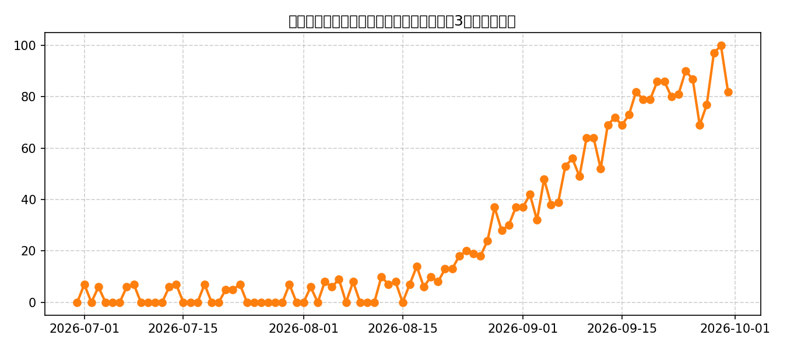
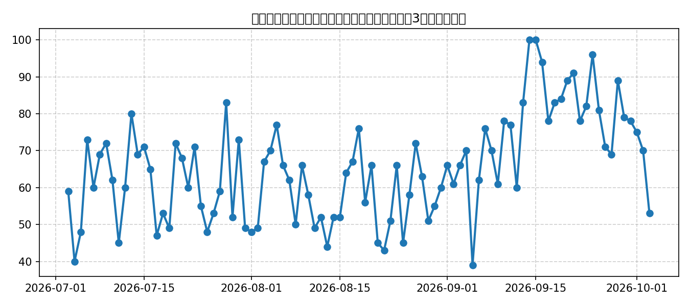

総合感染症・トレンド速報ダッシュボード
最終更新日時：2026年10月07日 15:05
📌 【使い方・見方を開く】（ここをクリックして展開）
タブを切り替えて、全国の流行の波や群馬県を含む都道府県別の関心度ランキング棒グラフ、さらにネット上の最新ニュース（要約）を確認できます。画面が止まった場合は下の注意事項をご覧ください。
📈 全国のトレンド推移 ＆ 📊 都道府県別ランキング（群馬など）


📈 全国のトレンド推移 ＆ 📊 都道府県別ランキング（群馬など）


⚠️ 画面がフリーズした（ZZZ…）場合：
スマホは画面を下に引っ張るか丸い矢印（🔄）をタップ、PCは Ctrl + F5 キーを押して再読み込みしてください。
スマホは画面を下に引っ張るか丸い矢印（🔄）をタップ、PCは Ctrl + F5 キーを押して再読み込みしてください。